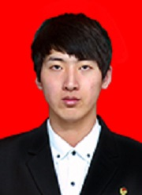

如果可以，就让梦想,再高那么一点
刘健松，男，汉族，1993年7月出生，中共党员，东北师范大学体育学院2012级本科生。连续3年获得国家奖学金，优秀学生干部奖学金，学有专长奖学金和优秀学生称号。2013年获国家田径项目一级裁判员等级证书，第十三届全国田径锦标赛男子4*400米接力冠军，男子十项全能第八名。2013年发表省级核心刊物一篇，入选2013年东北师范大学优秀党员百人团队。2014年获吉林省第十七届运动会男子十项全能冠军，全国高师运动会男子十项全能季军，入选2014-2015全国大学生国家奖学金风采录。2015年全国大学生长征运动会第五名，曾任体育学院第四十届团委学生会主席，现任东北师范大学第四十届学生会体育部部长。
《周易•乾》象曰：“天行健，君子以自强不息。” 意思是说天的运动刚强劲健。相应的，君子处事，也应像天一样，刚毅坚卓，发奋图强，永不停息。吾亦慕先贤，有志从之，大学四年力求进步，不敢有丝毫懈怠。也许大家常常看到的是他包括三年的国家奖学金等各类证书的不计其数；运动场上各项冠军的精彩瞬间；学生会主席的领导魄力。这是因为他相信是雄鹰，就该搏击长空；是强者，就该砥砺信念，坚定前行。
在历练中成长——家贫志坚，天道酬勤
刘健松出生于吉林省通化市一个普通的工人家庭，患有先天性心脏病的母亲只能在家中照顾哥哥和他，一家三口的生活来源全部依靠父亲远赴异乡打工赚的辛苦钱，生活十分拮据。儿时伊始，母亲就常常教育他“人穷志不穷”，也就是从幼时起，一份信念悄然地在心底萌发——成为一个男子汉，撑起家庭的重担。
成长的路上需要磨练。为了进入更好的中学，他需要更加优异的学习成绩和体育成绩。于是，八岁的他便踏上了体育之路。七载寒来暑往，日日伴随着附近军营的号声起床，披星戴月的在运动场上一圈又一圈的奔跑。如今每每回想往昔，其实叫醒他的并不是号声，而是梦想。高中时，为了获得更好的成绩，他远赴广西、江苏接受了更加专业，强度也更大的训练。一千多个昼夜几乎全部被训练和比赛填满。有目标的日子虽然充实，但每每万家灯火之日，独在异乡的他便更加思念远方的亲人。2011年，由于训练的原因，他没能见到身患癌症的奶奶最后一面。“子欲养而亲不待”的苦楚与懊悔，他至今还无法释怀和消解。也正是这份遗憾与懊悔，化作他继续拼搏的动力，让他忍受住了所有的苦痛与艰辛，能够得偿所愿的考入东北师范大学体育学院。
在竞技中腾飞——毅然前行，梦回赛场
肩负着家人的希望，怀揣着儿时的梦想，他就读于体育学院运动训练专业。从第一次踏入校门，他就告诉自己要坚持做到最好。进入大学的这三年里，他在完成每周二十几节文化课的同时，每天坚持高强度的训练，三年来每天五点半的早操风雨不误。为了迎接2013年的全国比赛，寒冬腊月里整个学院就只有他一个人在坚持训练，直到腊月二十八才回家。训练苦吗？苦。训练累吗？累。然而只要他心中有梦想、有追求，一切的努力与付出都是值得的。
而生活往往不能事事尽如人意，总有那么多挫折和伤痛让你始料不及。他也经受过运动员生涯中最让人痛苦的伤病。为了身体上的疾病不影响训练，他不得不接受手术。而为了不耽误训练和比赛，他拒绝在手术中打麻药。腰部被缝了5针，针线传透肌肉的感觉是那么的强烈，他曾一度疼的失去知觉。手术结束后，指甲因用力深陷指间，手术台的床单全都被汗水浸湿。术后第三天他就返回学校继续进行训练。皇天不负有心人，在第十三届全国田径锦标赛中，他代表东北师大站在了最高的领奖台上，获得男子4*400米接力冠军、男子十项全能第八名。同年他又获国家田径项目一级裁判员等级证书！
人生路上需要坚持。2014年5月，翘首期盼的吉林省运动会即将到来。而就在这时，因为长期高强度训练，他的左腿髌腱韧带拉伤，右手肘关节韧带拉伤。身体的疼痛使他夜夜辗转难寐，但比起身体的折磨更让他难以忍受的是要眼睁睁地错过这个期盼了四年的赛场，一千多个日夜的汗水将付之一炬。最后，他选择带伤比赛。参加十项全能比赛的运动员必须在两天内按顺序完成十项比赛。第一天：100米跑 、跳远 、铅球 、跳高、400米跑；第二天 ：110米跨栏 、铁饼 、撑竿跳高 、标枪、1500米跑。比赛成绩是按照专门田径运动全能评分表，将各个单项成绩所得的评分加起来计算的，总分多者为优胜 。在比赛途中，如果任何一个单项弃权，则不得计总分和名次。这就意味着他一旦站上赛场就必须咬牙坚持下来十项比赛。就这样，他几乎含泪完成了每一项比赛。终于，他又一次站上了冠军的领奖台，荣获了吉林省第十七届运动会男子十项全能冠军、男子团体定向越野冠军。
然而，更大的考验还在后面，赛后接踵而来就是全国高师运动会，身体的伤痛使他无法再一次参加如此高强度的比赛，可他清楚地听到心里的那个声音在激励他不要放弃。于是，他选择了打封闭针来缓解难忍的疼痛，当他再一次出现在赛场时，由于体力不支，在第八个项目中从五米多的高空坠落在地，瞬间失聪，看到教练、队友和医护人员焦急的神情和唇语，那时的他已然无法回应……躺在病床上的他，一直在想，走过了这么多个春夏秋冬，他到底是为了什么，想着身边为他而担心的他们，想着无数次的重复着同一个动作的枯燥，想着每天走在训练路上坚定而又孤独的背影，他要坚持完成最后两个项目，拼尽全力。最后他赢得了全国高师运动会男子十项全能季军，那一刻，他觉得自己虽败犹荣。
在实践中超越——博学广志，海纳百川
“书山有路勤为径，学海无涯苦作舟。”学习上，除了专业的体育训练，在学业功课上他也一刻不敢懈怠。他认真聆听每一门课，课下做好充分的巩固和延伸，渐渐成了自习室和图书馆的“常客”，熄灯后的寝室楼道里常常能看到他抱着台灯学习的身影。三年来，他的学习成绩始终保持着年级第一名的水平，连续3年获得国家奖学金。与此同时，他还参与了许多的科研项目，更是获得了优秀学生干部奖学金，学有专长奖学金和优秀学生称号。
“业精于勤”。在学生工作方面，作为一名光荣的共产党员，他入选了“东北师范大学优秀党员百人团队”；两次获得”五四红旗团干“称号。他时刻严格要求自己，在服务他人的同时，也在奉献中收获能力与感动。三年来他担任过年级长、体育学院学生会主席、校学生会体育部副部长，承办了全校“精英杯”篮球比赛、“学士杯”足球比赛等等大型赛事，充盈了同学们的课余生活，加深了同学们体育锻炼的意识。这些工作丰富了他的大学生活，使他得到了更好的锻炼与发展。这些对他来讲，都是莫大的荣幸和鼓舞。
“不知不觉，已经写了这么多，好像，还有很多很多的话想说，但却难以名状。还有很多很多的故事没有讲，虽然它们，同样酸涩美好。他的青春，才刚刚开始，他的故事也才刚刚开始，他的话讲不完，他的步伐也不会停。训练场，比赛场上的漫天彩云，是他要抓到的梦想，彩云里有奶奶踏过的足迹；彩云里，映着家人平安祥和的面庞；彩云里，有她头上带过的五彩发珠，彩云里，有他汗水洗过的青春彷徨。
你要问他，漫天的彩云什么时候有？他会悄悄地告诉你，风浪来过，平静顷刻，彩云飞至，漫天琉璃；你要问他，怎么抓到彩云？他会悄悄地告诉你，它永远永远，也无法抓到，至少，他抓不到；你要问他，为什么抓不到？他会微笑，然后大声的告诉你，如果可以，就让梦想，再高那么一点吧！
在历练中成长——家贫志坚，天道酬勤
刘健松出生于吉林省通化市一个普通的工人家庭，患有先天性心脏病的母亲只能在家中照顾哥哥和他，一家三口的生活来源全部依靠父亲远赴异乡打工赚的辛苦钱，生活十分拮据。儿时伊始，母亲就常常教育他“人穷志不穷”，也就是从幼时起，一份信念悄然地在心底萌发——成为一个男子汉，撑起家庭的重担。
成长的路上需要磨练。为了进入更好的中学，他需要更加优异的学习成绩和体育成绩。于是，八岁的他便踏上了体育之路。七载寒来暑往，日日伴随着附近军营的号声起床，披星戴月的在运动场上一圈又一圈的奔跑。如今每每回想往昔，其实叫醒他的并不是号声，而是梦想。高中时，为了获得更好的成绩，他远赴广西、江苏接受了更加专业，强度也更大的训练。一千多个昼夜几乎全部被训练和比赛填满。有目标的日子虽然充实，但每每万家灯火之日，独在异乡的他便更加思念远方的亲人。2011年，由于训练的原因，他没能见到身患癌症的奶奶最后一面。“子欲养而亲不待”的苦楚与懊悔，他至今还无法释怀和消解。也正是这份遗憾与懊悔，化作他继续拼搏的动力，让他忍受住了所有的苦痛与艰辛，能够得偿所愿的考入东北师范大学体育学院。
在竞技中腾飞——毅然前行，梦回赛场
肩负着家人的希望，怀揣着儿时的梦想，他就读于体育学院运动训练专业。从第一次踏入校门，他就告诉自己要坚持做到最好。进入大学的这三年里，他在完成每周二十几节文化课的同时，每天坚持高强度的训练，三年来每天五点半的早操风雨不误。为了迎接2013年的全国比赛，寒冬腊月里整个学院就只有他一个人在坚持训练，直到腊月二十八才回家。训练苦吗？苦。训练累吗？累。然而只要他心中有梦想、有追求，一切的努力与付出都是值得的。
而生活往往不能事事尽如人意，总有那么多挫折和伤痛让你始料不及。他也经受过运动员生涯中最让人痛苦的伤病。为了身体上的疾病不影响训练，他不得不接受手术。而为了不耽误训练和比赛，他拒绝在手术中打麻药。腰部被缝了5针，针线传透肌肉的感觉是那么的强烈，他曾一度疼的失去知觉。手术结束后，指甲因用力深陷指间，手术台的床单全都被汗水浸湿。术后第三天他就返回学校继续进行训练。皇天不负有心人，在第十三届全国田径锦标赛中，他代表东北师大站在了最高的领奖台上，获得男子4*400米接力冠军、男子十项全能第八名。同年他又获国家田径项目一级裁判员等级证书！
人生路上需要坚持。2014年5月，翘首期盼的吉林省运动会即将到来。而就在这时，因为长期高强度训练，他的左腿髌腱韧带拉伤，右手肘关节韧带拉伤。身体的疼痛使他夜夜辗转难寐，但比起身体的折磨更让他难以忍受的是要眼睁睁地错过这个期盼了四年的赛场，一千多个日夜的汗水将付之一炬。最后，他选择带伤比赛。参加十项全能比赛的运动员必须在两天内按顺序完成十项比赛。第一天：100米跑 、跳远 、铅球 、跳高、400米跑；第二天 ：110米跨栏 、铁饼 、撑竿跳高 、标枪、1500米跑。比赛成绩是按照专门田径运动全能评分表，将各个单项成绩所得的评分加起来计算的，总分多者为优胜 。在比赛途中，如果任何一个单项弃权，则不得计总分和名次。这就意味着他一旦站上赛场就必须咬牙坚持下来十项比赛。就这样，他几乎含泪完成了每一项比赛。终于，他又一次站上了冠军的领奖台，荣获了吉林省第十七届运动会男子十项全能冠军、男子团体定向越野冠军。
然而，更大的考验还在后面，赛后接踵而来就是全国高师运动会，身体的伤痛使他无法再一次参加如此高强度的比赛，可他清楚地听到心里的那个声音在激励他不要放弃。于是，他选择了打封闭针来缓解难忍的疼痛，当他再一次出现在赛场时，由于体力不支，在第八个项目中从五米多的高空坠落在地，瞬间失聪，看到教练、队友和医护人员焦急的神情和唇语，那时的他已然无法回应……躺在病床上的他，一直在想，走过了这么多个春夏秋冬，他到底是为了什么，想着身边为他而担心的他们，想着无数次的重复着同一个动作的枯燥，想着每天走在训练路上坚定而又孤独的背影，他要坚持完成最后两个项目，拼尽全力。最后他赢得了全国高师运动会男子十项全能季军，那一刻，他觉得自己虽败犹荣。
在实践中超越——博学广志，海纳百川
“书山有路勤为径，学海无涯苦作舟。”学习上，除了专业的体育训练，在学业功课上他也一刻不敢懈怠。他认真聆听每一门课，课下做好充分的巩固和延伸，渐渐成了自习室和图书馆的“常客”，熄灯后的寝室楼道里常常能看到他抱着台灯学习的身影。三年来，他的学习成绩始终保持着年级第一名的水平，连续3年获得国家奖学金。与此同时，他还参与了许多的科研项目，更是获得了优秀学生干部奖学金，学有专长奖学金和优秀学生称号。
“业精于勤”。在学生工作方面，作为一名光荣的共产党员，他入选了“东北师范大学优秀党员百人团队”；两次获得”五四红旗团干“称号。他时刻严格要求自己，在服务他人的同时，也在奉献中收获能力与感动。三年来他担任过年级长、体育学院学生会主席、校学生会体育部副部长，承办了全校“精英杯”篮球比赛、“学士杯”足球比赛等等大型赛事，充盈了同学们的课余生活，加深了同学们体育锻炼的意识。这些工作丰富了他的大学生活，使他得到了更好的锻炼与发展。这些对他来讲，都是莫大的荣幸和鼓舞。
“不知不觉，已经写了这么多，好像，还有很多很多的话想说，但却难以名状。还有很多很多的故事没有讲，虽然它们，同样酸涩美好。他的青春，才刚刚开始，他的故事也才刚刚开始，他的话讲不完，他的步伐也不会停。训练场，比赛场上的漫天彩云，是他要抓到的梦想，彩云里有奶奶踏过的足迹；彩云里，映着家人平安祥和的面庞；彩云里，有她头上带过的五彩发珠，彩云里，有他汗水洗过的青春彷徨。
你要问他，漫天的彩云什么时候有？他会悄悄地告诉你，风浪来过，平静顷刻，彩云飞至，漫天琉璃；你要问他，怎么抓到彩云？他会悄悄地告诉你，它永远永远，也无法抓到，至少，他抓不到；你要问他，为什么抓不到？他会微笑，然后大声的告诉你，如果可以，就让梦想，再高那么一点吧！